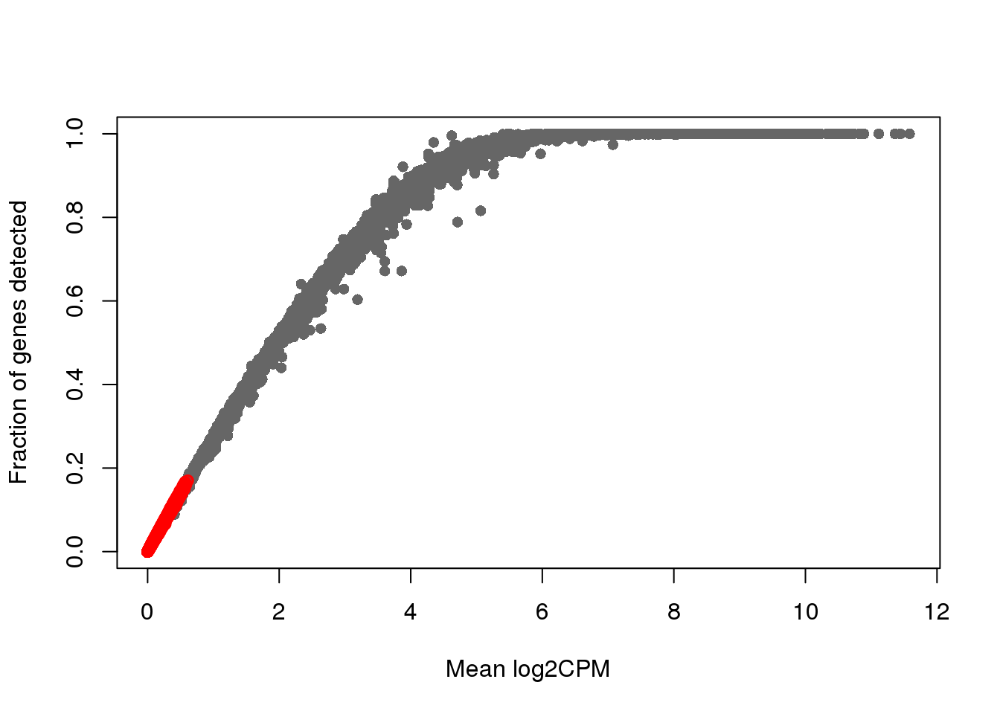
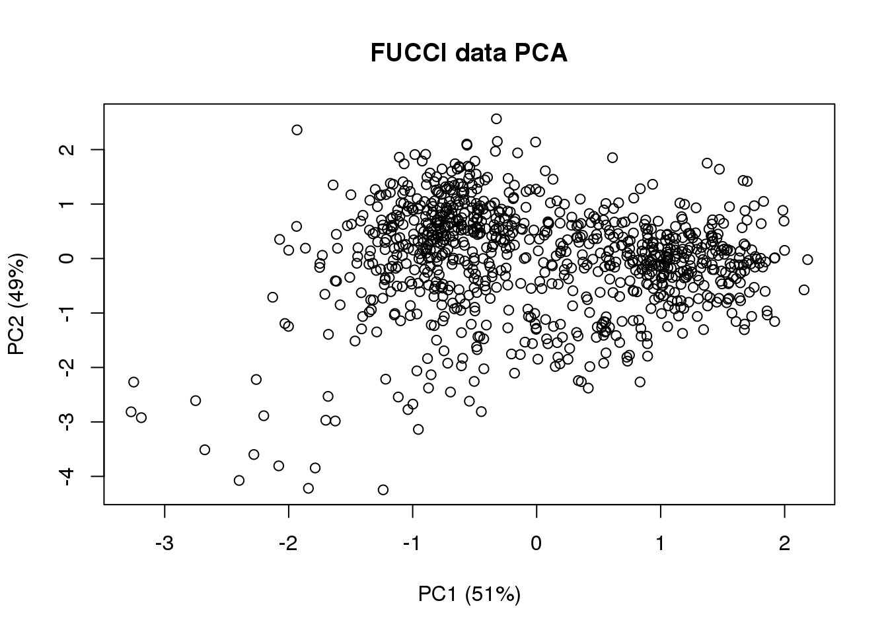

Last updated: 2018-05-22
Code version: ebd5dd1
Packages
library(circular)
library(conicfit)
library(Biobase)
library(dplyr)
library(matrixStats)
library(NPCirc)
library(smashr)
library(genlasso)
library(ggplot2)Load data
df <- readRDS(file="../data/eset-final.rds")
pdata <- pData(df)
fdata <- fData(df)
# select endogeneous genes
counts <- exprs(df)[grep("ENSG", rownames(df)), ]
log2cpm.all <- t(log2(1+(10^6)*(t(counts)/pdata$molecules)))
macosko <- readRDS("../data/cellcycle-genes-previous-studies/rds/macosko-2015.rds")
theta <- readRDS("../output/images-time-eval.Rmd/theta.rds")
log2cpm.all.ord <- log2cpm.all[,order(theta)]
source("../code/utility.R")df <- readRDS(file="../data/eset-raw.rds")
pdata <- pData(df)
fdata <- fData(df)
table(pdata$cell_number)
0 1 2 3 4 5 6 7 8 12 20
15 1327 100 51 21 14 2 2 2 1 1 ## Total mapped reads cutoff
cut_off_reads <- quantile(pdata[pdata$cell_number == 0,"mapped"], 0.82)
pdata$cut_off_reads <- pdata$mapped > cut_off_reads
## Unmapped ratio cutoff
pdata$unmapped_ratios <- with(pdata, unmapped/umi)
cut_off_unmapped <- quantile(pdata[pdata$cell_number == 0,"unmapped_ratios"], 0.40)
pdata$cut_off_unmapped <- pdata$unmapped_ratios < cut_off_unmapped
plot_unmapped <- ggplot(pdata[pdata$cell_number == 0 |
pdata$cell_number == 1 , ],
aes(x = unmapped_ratios *100, fill = as.factor(cell_number))) +
geom_density(alpha = 0.5) +
geom_vline(xintercept = cut_off_unmapped *100, colour="grey", linetype = "longdash") +
labs(x = "Unmapped reads/ total reads", title = "Unmapped reads percentage")
plot_unmapped## ERCC percentage cutoff
pdata$ercc_percentage <- pdata$reads_ercc / pdata$mapped
cut_off_ercc <- quantile(pdata[pdata$cell_number == 0,"ercc_percentage"], 0.20)
pdata$cut_off_ercc <- pdata$ercc_percentage < cut_off_ercc
plot_ercc <- ggplot(pdata[pdata$cell_number == 0 |
pdata$cell_number == 1 , ],
aes(x = ercc_percentage *100, fill = as.factor(cell_number))) +
geom_density(alpha = 0.5) +
geom_vline(xintercept = cut_off_ercc *100, colour="grey", linetype = "longdash") +
labs(x = "ERCC reads / total mapped reads", title = "ERCC reads percentage")
plot_ercc## Number of genes detected cutoff
cut_off_genes <- quantile(pdata[pdata$cell_number == 0,"detect_hs"], 0.80)
pdata$cut_off_genes <- pdata$detect_hs > cut_off_genes
plot_gene <- ggplot(pdata[pdata$cell_number == 0 |
pdata$cell_number == 1 , ],
aes(x = detect_hs, fill = as.factor(cell_number))) +
geom_density(alpha = 0.5) +
geom_vline(xintercept = cut_off_genes, colour="grey", linetype = "longdash") +
labs(x = "Gene numbers", title = "Numbers of detected genes")
plot_geneMapped reads
eset_final <- readRDS(file="../data/eset-final.rds")
ggplot(pData(eset_final),
aes(x = factor(experiment), y = mapped, color = factor(experiment))) +
geom_violin() +
geom_boxplot(alpha = .01, width = .2, position = position_dodge(width = .9)) +
labs(x = "C1 chip", y = "Number of reads",
title = "Number of mapped sequences per single cell") +
theme(legend.title = element_blank(),
axis.text.x = element_text(angle = 45, hjust = 1, vjust = 1))eset_raw <- readRDS(file="../data/eset-raw.rds")
count_filter <- exprs(eset_raw[,pData(eset_raw)$filter_all == TRUE])
count_ensg <- count_filter[grep("ENSG", rownames(count_filter)),]
which_over_expressed <- which(apply(count_ensg, 1, function(x) any(x>(4^6)) ))
over_expressed_genes <- rownames(count_ensg)[which_over_expressed]
over_expressed_genescharacter(0)cpm_ensg <- t(t(count_ensg)/pData(eset_raw)$molecules)*(10^6)
which_lowly_expressed <- which(rowMeans(cpm_ensg) < 2)
log2cpm_filt <- log2(1+10^6*count_ensg/pData(eset_raw)$molecules)
genedetect_filt <- count_ensg
plot(x=rowMeans(log2cpm_filt), y=rowMeans(genedetect_filt>0),
xlab = "Mean log2CPM",
ylab = "Fraction of genes detected", col = "gray40", pch=16)
points(x=rowMeans(log2cpm_filt)[which_lowly_expressed],
y=rowMeans(genedetect_filt>0)[which_lowly_expressed], col = "red")
dim(count_ensg)[1] 20327 923dim(count_ensg[-which_lowly_expressed,])[1] 11804 923# genes_to_include <- setdiff(1:nrow(count_ensg), gene_filter)
# length(genes_to_include)eset_final <- readRDS(file="../data/eset-final.rds")
pdata <- pData(eset_final)
fdata <- fData(eset_final)
pdata$chip_id <- factor(pdata$chip_id)
pdata$experiment <- factor(pdata$experiment)
library(cowplot)
library(ggplot2)
library(gridExtra)
rotatedAxisElementText = function(angle,position='x'){
angle = angle[1];
position = position[1]
positions = list(x=0,y=90,top=180,right=270)
if(!position %in% names(positions))
stop(sprintf("'position' must be one of [%s]",paste(names(positions),collapse=", ")),call.=FALSE)
if(!is.numeric(angle))
stop("'angle' must be numeric",call.=FALSE)
rads = (angle - positions[[ position ]])*pi/180
# hjust = 0.5*(1 - sin(rads))
hjust = .5+sin(rads)
vjust = 1
# vjust = 0.5*(1 + cos(rads))
element_text(angle=angle,vjust=vjust,hjust=hjust)
}
batch.plot <- plot_grid(
ggplot(pdata,
aes(x=experiment, y=rfp.median.log10sum,
col=experiment)) +
geom_violin() + geom_boxplot(width=.1) +
theme(axis.text.x = rotatedAxisElementText(30,'x')),
ggplot(pdata,
aes(x=experiment, y=gfp.median.log10sum,
col=experiment)) +
geom_violin() + geom_boxplot(width=.1) +
theme(axis.text.x = rotatedAxisElementText(30,'x')),
ggplot(pdata,
aes(x=experiment, y=dapi.median.log10sum,
col=experiment)) +
geom_violin() + geom_boxplot(width=.1) +
theme(axis.text.x = rotatedAxisElementText(30,'x')),
ncol=3)
batch.plotlibrary(car)
lm.rfp <- lm(rfp.median.log10sum~factor(chip_id)+factor(experiment) + factor(image_label),
data = pdata)
lm.gfp <- lm(gfp.median.log10sum~factor(chip_id)+factor(experiment) + factor(image_label),
data = pdata)
lm.dapi <- lm(dapi.median.log10sum~factor(chip_id)+factor(experiment) + factor(image_label),
data = pdata)
aov.lm.rfp <- Anova(lm.rfp, type = "III")
aov.lm.gfp <- Anova(lm.gfp, type = "III")
aov.lm.dapi <- Anova(lm.dapi, type = "III")
aov.lm.rfpAnova Table (Type III tests)
Response: rfp.median.log10sum
Sum Sq Df F value Pr(>F)
(Intercept) 45.043 1 197.2052 < 2.2e-16 ***
factor(chip_id) 1.352 5 1.1834 0.3154772
factor(experiment) 9.837 15 2.8713 0.0002049 ***
factor(image_label) 27.033 95 1.2458 0.0655855 .
Residuals 176.330 772
---
Signif. codes: 0 '***' 0.001 '**' 0.01 '*' 0.05 '.' 0.1 ' ' 1aov.lm.gfpAnova Table (Type III tests)
Response: gfp.median.log10sum
Sum Sq Df F value Pr(>F)
(Intercept) 58.124 1 575.1676 < 2e-16 ***
factor(chip_id) 1.365 5 2.7024 0.01974 *
factor(experiment) 11.844 15 7.8136 < 2e-16 ***
factor(image_label) 12.378 95 1.2894 0.04034 *
Residuals 78.014 772
---
Signif. codes: 0 '***' 0.001 '**' 0.01 '*' 0.05 '.' 0.1 ' ' 1aov.lm.dapiAnova Table (Type III tests)
Response: dapi.median.log10sum
Sum Sq Df F value Pr(>F)
(Intercept) 55.309 1 1527.5716 < 2e-16 ***
factor(chip_id) 0.443 5 2.4469 0.03263 *
factor(experiment) 11.055 15 20.3545 < 2e-16 ***
factor(image_label) 3.160 95 0.9187 0.69323
Residuals 27.952 772
---
Signif. codes: 0 '***' 0.001 '**' 0.01 '*' 0.05 '.' 0.1 ' ' 1ggplot(pdata,
aes(x=gfp.median.log10sum.adjust,
y=rfp.median.log10sum.adjust)) +
geom_point(alpha = .5, cex = .7) +
# xlim(1,3.5) + ylim(1,3.5) +
labs(x="GFP intensity (log10 pixel sum)",
y = "RFP intensity (log10 pixel sum)") +
# facet_wrap(~as.factor(chip_id), ncol=3) +
theme_gray() + theme(legend.position="none")# compute projected cell time
pc.fucci <- prcomp(subset(pdata,
select=c("rfp.median.log10sum.adjust",
"gfp.median.log10sum.adjust")),
center = T, scale. = T)
Theta.cart <- pc.fucci$x
library(circular)
Theta.fucci <- coord2rad(Theta.cart)
Theta.fucci <- (2*pi)-as.numeric(Theta.fucci)
(pc.fucci$sdev^2)/sum(pc.fucci$sdev^2)[1] 0.5134325 0.4865675plot(Theta.cart[,1],
Theta.cart[,2], xlab = "PC1 (51%)", ylab = "PC2 (49%)",
main = "FUCCI data PCA")
library(movMF)
res <- movMF(Theta.cart, k=3, nruns=50,
kappa = list(common = TRUE))
clust <- predict(res)
summary(as.numeric(Theta.fucci)[clust==1]) Min. 1st Qu. Median Mean 3rd Qu. Max.
0.004025 0.304041 1.112189 3.000234 5.923906 6.282360 summary(as.numeric(Theta.fucci)[clust==2]) Min. 1st Qu. Median Mean 3rd Qu. Max.
2.885 3.537 3.941 3.896 4.243 5.069 summary(as.numeric(Theta.fucci)[clust==3]) Min. 1st Qu. Median Mean 3rd Qu. Max.
1.179 1.646 2.091 2.063 2.455 2.861 theta.adj <- Theta.fucci
cutoff <- min(Theta.fucci[clust==1])
theta.adj <- (Theta.fucci - cutoff)%% (2*pi)
plot(theta.adj, Theta.fucci)plot(circular(theta.adj), stack=TRUE)hist(theta.adj, nclass=25, xlab = "Cell time",
main = "Estimated cell time",
xlim = c(0, 2.1*pi))with(pdata,
{
par(mfrow=c(2,2))
plot(x=theta.adj,
y=gfp.median.log10sum.adjust,
xlab = "Estiamted cell time",
ylab = "FUCCI intensites",
col = "forestgreen", pch=16, cex=.7,
ylim = range(gfp.median.log10sum.adjust,rfp.median.log10sum.adjust))
points(x=theta.adj,
y=rfp.median.log10sum.adjust,
col = "red", pch=16, cex=.7)
plot(x=theta.adj,
y=dapi.median.log10sum.adjust,
xlab = "Estiamted cell time",
ylab = "DAPI intensites",
col = "blue", pch=16, cex=.7)
plot(x=theta.adj,
y=molecules,
xlab = "Estiamted cell time",
ylab = "Sample molecule count",
col = "black", pch=1, cex=.7)
})
# select some marker genes
counts <- exprs(eset_final)[grep("ENSG", rownames(eset_final)), ]
log2cpm.all <- t(log2(1+(10^6)*(t(counts)/pdata$molecules)))
cdk1 <- macosko$ensembl[macosko$hgnc=="CDK1"]
cdc6 <- macosko$ensembl[macosko$hgnc=="CDC6"]
tpx2 <- macosko$ensembl[macosko$hgnc=="TPX2"]
# saveRDS(data.frame(theta=theta.adj,
# cdk1=log2cpm.all[rownames(log2cpm.all) == cdk1,],
# cdc6=log2cpm.all[rownames(log2cpm.all) == cdc6,],
# tpx2=log2cpm.all[rownames(log2cpm.all) == tpx2,]),
# file = "../output_tmp/cycle.rds")
par(mfrow=c(2,2))plot(x=theta.adj,
y= log2cpm.all[rownames(log2cpm.all) == cdk1,],
main = "CDK1 (G2 phase)",
ylab = "log2cpm", xlab = "Estimated cell time")
plot(x=theta.adj,
y= log2cpm.all[rownames(log2cpm.all) == cdc6,],
main = "CDC6 (G1/S phase)",
ylab = "log2cpm", xlab = "Estimated cell time")
plot(x=theta.adj,
y= log2cpm.all[rownames(log2cpm.all) == tpx2,],
main = "TPX2 (M phase)",
ylab = "log2cpm", xlab = "Estimated cell time")sessionInfo()R version 3.4.4 (2018-03-15)
Platform: x86_64-redhat-linux-gnu (64-bit)
Running under: Scientific Linux 7.4 (Nitrogen)
Matrix products: default
BLAS/LAPACK: /usr/lib64/R/lib/libRblas.so
locale:
[1] LC_CTYPE=en_US.UTF-8 LC_NUMERIC=C
[3] LC_TIME=en_US.UTF-8 LC_COLLATE=en_US.UTF-8
[5] LC_MONETARY=en_US.UTF-8 LC_MESSAGES=en_US.UTF-8
[7] LC_PAPER=en_US.UTF-8 LC_NAME=C
[9] LC_ADDRESS=C LC_TELEPHONE=C
[11] LC_MEASUREMENT=en_US.UTF-8 LC_IDENTIFICATION=C
attached base packages:
[1] parallel stats graphics grDevices utils datasets methods
[8] base
other attached packages:
[1] movMF_0.2-2 car_2.1-6 gridExtra_2.3
[4] cowplot_0.9.2 ggplot2_2.2.1 genlasso_1.3
[7] igraph_1.2.1 smashr_1.1-0 caTools_1.17.1
[10] data.table_1.10.4-3 Matrix_1.2-12 wavethresh_4.6.8
[13] MASS_7.3-49 ashr_2.2-7 Rcpp_0.12.16
[16] NPCirc_2.0.1 matrixStats_0.53.1 dplyr_0.7.4
[19] Biobase_2.38.0 BiocGenerics_0.24.0 conicfit_1.0.4
[22] geigen_2.1 pracma_2.1.4 circular_0.4-93
loaded via a namespace (and not attached):
[1] jsonlite_1.5 splines_3.4.4 foreach_1.4.4
[4] shiny_1.0.5 assertthat_0.2.0 yaml_2.1.18
[7] slam_0.1-42 pillar_1.2.1 backports_1.1.2
[10] lattice_0.20-35 quantreg_5.35 glue_1.2.0
[13] digest_0.6.15 skmeans_0.2-11 minqa_1.2.4
[16] colorspace_1.3-2 htmltools_0.3.6 httpuv_1.3.6.2
[19] plyr_1.8.4 pkgconfig_2.0.1 misc3d_0.8-4
[22] SparseM_1.77 xtable_1.8-2 mvtnorm_1.0-7
[25] scales_0.5.0 MatrixModels_0.4-1 lme4_1.1-15
[28] git2r_0.21.0 tibble_1.4.2 mgcv_1.8-23
[31] nnet_7.3-12 lazyeval_0.2.1 pbkrtest_0.4-7
[34] magrittr_1.5 mime_0.5 evaluate_0.10.1
[37] nlme_3.1-131.1 doParallel_1.0.11 truncnorm_1.0-8
[40] tools_3.4.4 stringr_1.3.0 munsell_0.4.3
[43] cluster_2.0.6 plotrix_3.7 bindrcpp_0.2
[46] compiler_3.4.4 rlang_0.2.0 nloptr_1.0.4
[49] grid_3.4.4 iterators_1.0.9 htmlwidgets_1.0
[52] crosstalk_1.0.0 bitops_1.0-6 labeling_0.3
[55] rmarkdown_1.9 boot_1.3-20 gtable_0.2.0
[58] codetools_0.2-15 R6_2.2.2 knitr_1.20
[61] clue_0.3-54 bindr_0.1.1 rprojroot_1.3-2
[64] shape_1.4.4 stringi_1.1.7 pscl_1.5.2
[67] SQUAREM_2017.10-1 This R Markdown site was created with workflowr